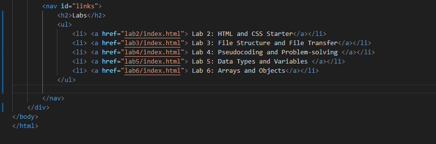

Lab 3 - File Structure and File Transfer
Challenge
Since we are both experience programmers, we didn't find any challenges with this lab since we are used to the HTML and CSS language.
Problems
When displaying our images, we had a little trouble with the clipping of the image when using the css property: "float: right". This made the image centered on the right but messed up our alignment with the divs. To fix this we researched about the overflow property on wss schools: https://www.w3schools.com/css/css_overflow.asp. We then added to our minor-section div to include this: overflow: hidden; and it fixed our issue.
Reflection
This assignment was easy for us since we have a good amount of experience working with HTML and CSS. For the problem we had, it was pretty easy to solve and only got us stuck for a few minutes. The amount of work was similar to lab 2 and that lab was not difficult for us. We divided the amount of work in half and didn't run into any big issues. We followed the instructions step by step and didn't really get stuck anywhere.
Results
This is the index.html for lab 3 we created. Here is the file structure we used from the template.
This is the screenshot for Task 2 where we created a bulleted list for each of our labs.
This is the screenshot to show our lab3 index.html
This is the screenshot to show our lab3 index.html in the browser.
This is the screenshot to show Github Desktop files on the server.
This is the screenshot to show the uploaded site.
This is the screenshot to show the uploaded site with the CSS